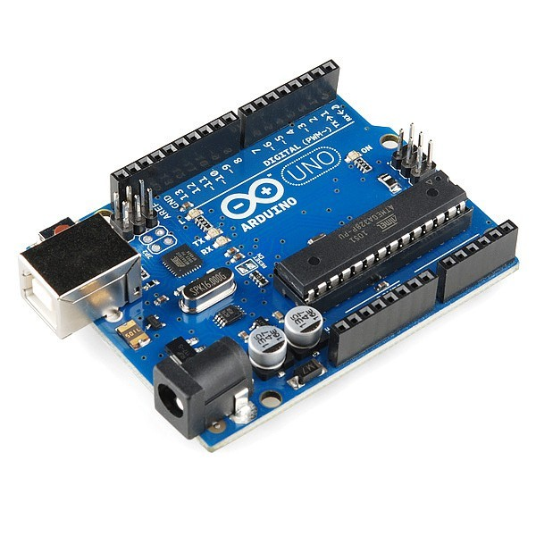

PROJECT 1
THE MATERIAL USED
.MOTOR(AC)
BATTERY
MATTERIAL X
SANITIZER(SPRAY)
ROLLER
THE FABRIC USED
Terylene is a synthetic polyester fibre produced by polymerizing ethylene
glycol and terephthelic acid which is obtained from petroleum.
The fibre was first created
in 1941 by chemist J R WHINFIELD
of Accrington who sold the patent rights to the
chemical
company ICI. In America, it is produced as the name “Dacron”.
It has
created as a “Ready Market” as “made-Up” garments
as they will take permanent
pleats when subjected to
the correct temperature, at the time of manufacturing.
The
major disadvantage is that they are yet not easily procurable by
the by the
yard. Since the terylene fibre can
be chemically reproduced, thus the
manufacturers
have a greater control on the industry in these consequence
which
emphasis that “TERYLENE” can be produced as per
the requirement in future.
PRINCIPLE
THIS DEVICE, WORKS IN THE FOLLOWING WAY:-
. THE TERYLENE FABRIC IS ROLLED OUT OF THE SHEET OF TIN, THROUGH THE
ROLLER AND MOTOR.
. IT IS GENERALLY PLACED BEFORE A SWITCH CIRCOUTI BOARD/
PANEL TO PREVENT SPREAD OF COVID, IF THERE.
THE TERYLENE ACTS AS A DISINFECTANT WITH APPROPRIATE CHEMICALS
. INSTEAD OF TOUCHING THE PANEL DIRECTLY, ONE TOUCHES IT
THROUGH THE TERYLENE, PREVENTING AN INFECTION IF IT WAS
THERE ON THE PANEL SURFACE
. THE TERYLENE GETS PULLED UP, IS DISINFECTED AND THEN IS
BROUGHT DOWN WOTH THE HELP OF MOTOR.
THE GLASSES AND THE BAND
MATERIAL USED
74HC595 SHIFT REGISTER
2) HCSR04 UNTRASONIC SENSOR
3) ARDUINO UNO
4) BREAD BOARD
5) BUZZER
6) BATTERY(1.5V)
PRINCIPLE
THE GLASSES AND GLOVES WORK IN THE FOLLOWING WAY:-
.THE GLASSES AND THE GLOVE ARE CONNECT TO EACH OTHER
.IF AN OBJECT COMES WITHIN THE RADIUS OF 12CM, AN ALERT SIGNAL IS DISPLAYED ON
THE PERIPHERAL VISION.
.THIS AIMS AT MAKING SOCIAL DISTANCING MORE EFFIECIENT.
.THE GLOVES MONITOR THE PULSE RATE, BP, AND THE TEMPERATURE OF BODY
AND SENDS AN ALERT TO THE LENSES WHEN THE VITALS ARE NOT NORMAL.
